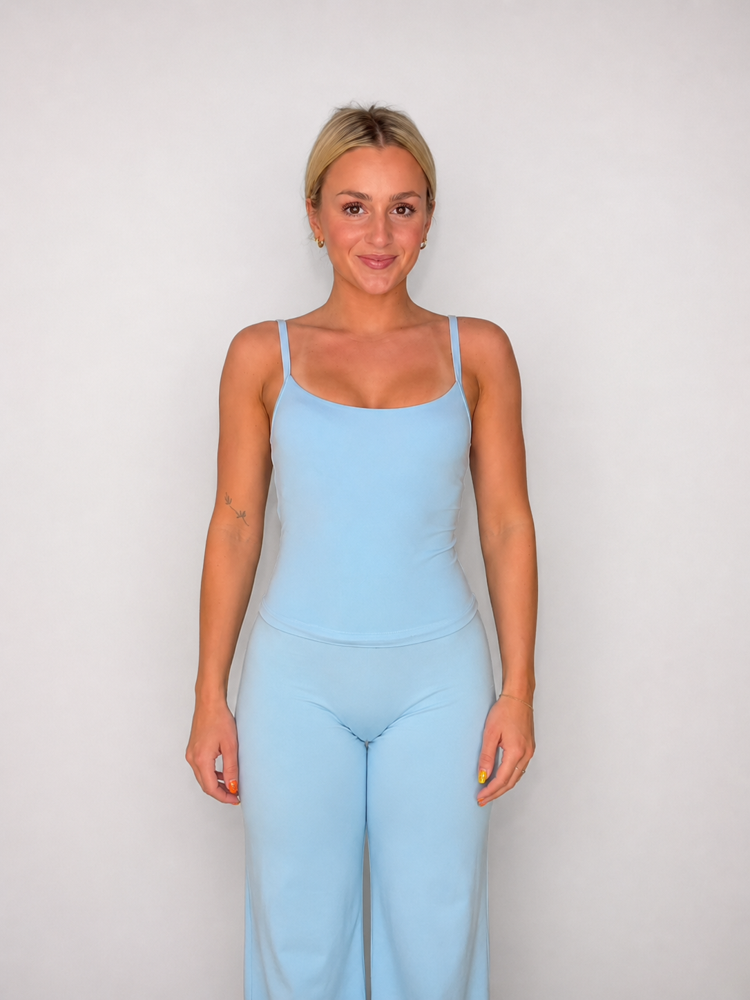
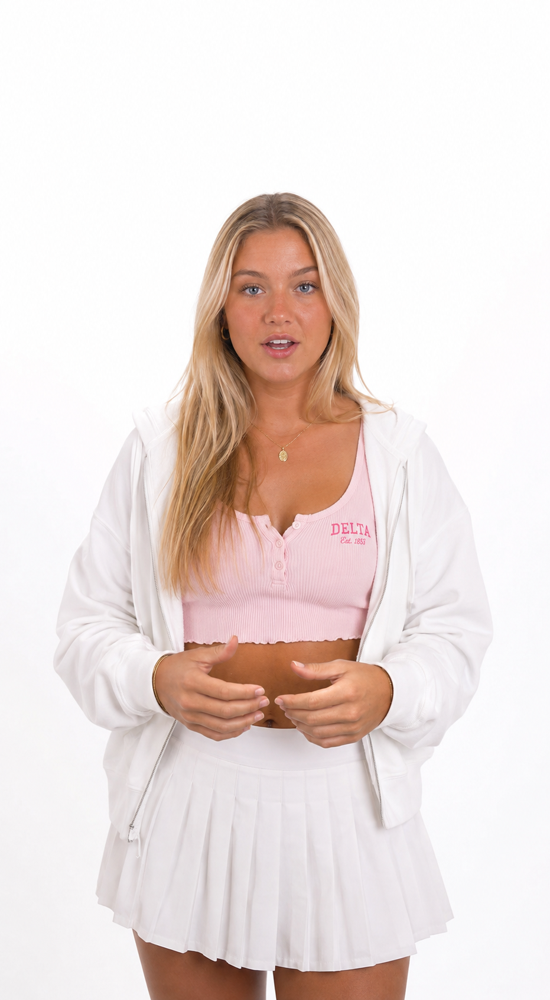
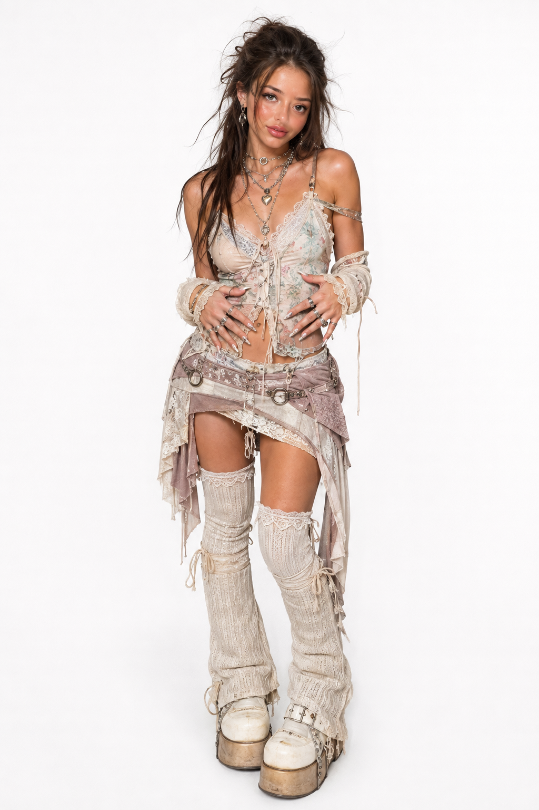
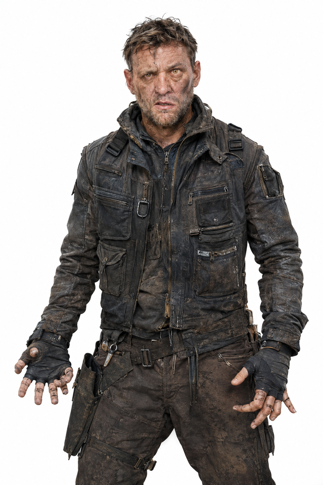
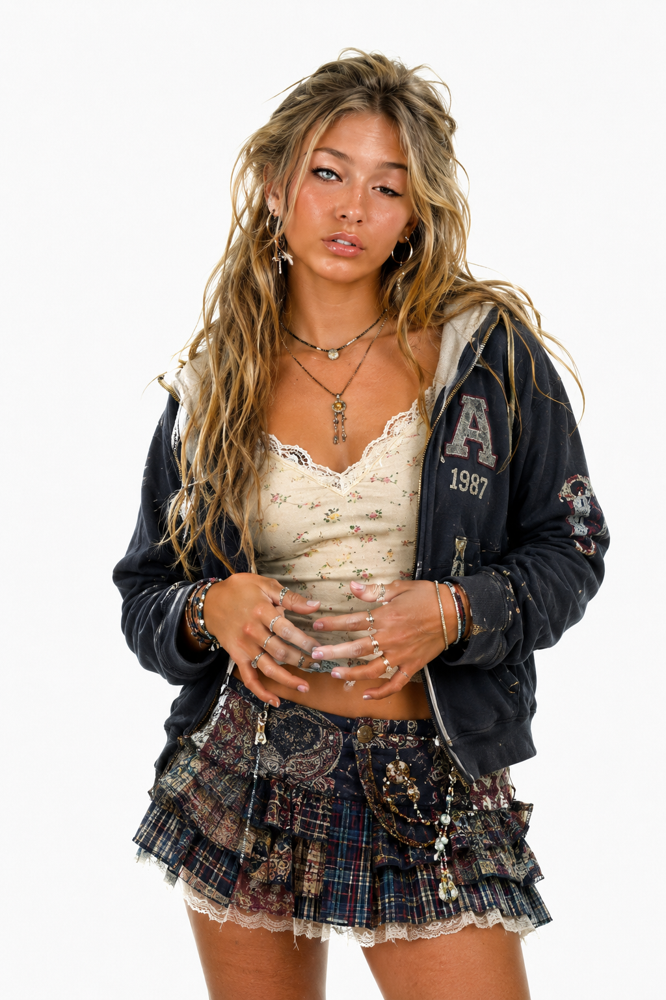

Good character
Mechanic-style worker
Clear adult identity, believable workwear texture, visible hands, and a clean white background that makes the character easy to reuse.
A simple reference workflow for TikTok Shop creators. Pick a clean motion video, create a believable identity image, then use a strict Seedance prompt that tells the model what to preserve and what to replace. The reference video is the movement. The image reference is the identity.
Old text-to-video prompts tried to recreate every visual detail. Reference editing works differently. The uploaded references already carry most of the information. Your prompt should enforce the hierarchy and stop the model from changing the wrong things.
Body movement, gestures, posture, head turns, facial timing, lip movement, pacing, and scene behavior.
Camera angle, framing, movement, perspective, subject scale, composition, background, and timing.
Face, hair, body proportions, skin tone, clothing, colors, and overall person appearance.
Only replace the person. Do not restage, redesign, improve, reinterpret, or change the scene.
This is mainly for image generation. Use it in ChatGPT, Gemini, or another image model to create the clean Image1 reference. The user controls the age, gender, and profession or major identifier. The site rolls compatible body, face, hair, eyes, skin, outfit, and realism details.
These are examples of the kind of Image1 references creators should aim for: clear person, clean background, believable styling, and enough visible body and clothing information for the video edit to stay stable.
Clear adult identity, believable workwear texture, visible hands, and a clean white background that makes the character easy to reuse.

Simple front-facing pose, readable clothing color, natural skin texture, and consistent studio lighting for a strong identity reference.

Distinct hair, outfit, face, and styling details give the image model enough information to keep the character consistent.
These can look impressive as still images, but they are harder for video models to keep stable because they contain too many tiny details, complex hands, layered clothing, and elements that can flicker or change frame-to-frame.

Complex jewelry, lace, straps, rings, nails, and hand placement give the video model too many small elements to preserve consistently.

Too many pockets, straps, zippers, dirt marks, and complicated hand shapes can flicker, smear, or drift during the video edit.

Layered clothing, jewelry, messy hair detail, and visible fingers create many moving edges that can change from frame to frame.
A full-body image is not automatically better. The best image is the one that gives the edit model clear identity information from a similar viewpoint to the source video.
Use a character image shot from a similar height and direction. Chest-up can work well when the video is chest-up.
Natural skin, imperfect lighting, real hair texture, and normal clothing usually transfer more consistently.
Over-smoothed skin, plastic hair, fantasy lighting, and overly perfect features can cause identity drift and face warping.
If the face is cut off, blurred, hidden, or from a very different angle, the model has to guess too much.
The model is not just copying a vibe. It is inheriting the motion, camera behavior, timing, and scene. Choose a video that already does what you want the final clip to do.
One main person, clear body movement, visible face, consistent lighting, and no fast cuts. This gives the edit model a strong motion map.
Fast camera swings, blocked faces, heavy blur, multiple people crossing, or constant cuts can break face consistency and body shape.
The person should stay readable for most of the clip.
Hands over face, props blocking the body, or people crossing the subject can create unstable edits.
One subject makes the replacement target obvious.
Movement is fine. Chaotic motion is what causes problems.
The output is built for the normal Seedance 2.5 Edit setup: @Video1 is the base motion video, and @Image1 is the replacement identity image.
Use @Video1 as the base video and motion reference. Replace only the person in @Video1 with the person from @Image1.
Preserve the original video's body movement, hand gestures, head movement, facial performance, lip movement, timing, pacing, camera angle, framing, lighting, background, and scene as closely as possible.
Only change the person's appearance. Keep the motion, camera, timing, background, and composition unchanged.
Make the result photorealistic, natural, and temporally consistent. Avoid face warping, flickering, identity drift, changing clothing, body morphing, or frame-to-frame appearance changes.
Teach creators the sequence. The tool works best when the source video and character image are chosen before the prompt is written.
Choose the clip that already has the body movement, camera, timing, framing, and scene you want.
Use the image preset prompt to transform the start frame into a clean identity reference with the same pose, angle, framing, and lighting.
Tell Higgsfield to preserve the video 1:1 and replace only the selected person or object.
The final export should look like the same reference clip with a clean replacement. If identity, hands, face, clothing, or background drift frame-to-frame, adjust the references before over-prompting.
Background shifts, camera angle changes, clothing morphs, face flickers, hands melt, or timing no longer matches the original video.
The motion, camera, timing, framing, and scene match the reference video while the replacement identity stays stable from Image 1.